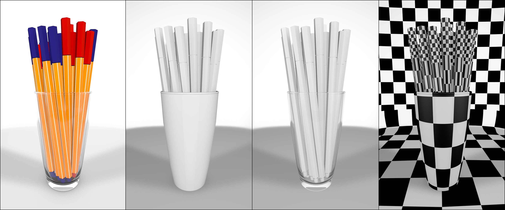

Function available in CINEMA 4D Prime, Visualize, Broadcast, Studio & BodyPaint 3D
渲染设置
基本
输出
保存
多通道
抗锯齿
材质覆写
选项
立体
Team Render
材质覆写
从左至右：正常渲染、灰色材质渲染、增加透明材质、纹理替代材质（如快速检查 UV 贴图）。
虽然材质的效果显著，但是有时候你需要用一个简单的材质替代所有现有的材质进行简易的工程渲染，被称为白模渲染，这就是材质覆写功能所能实现的。工程中的所有材质都被替换为这里设定的材质。纹理标签中的设定的投射类型对此不会产生影响，你可以单独排除被替代的材质（使其不被替换），就像防止材质通道被影响一样。
注意，由于内部原因，即使是“空”纹理标签（没有指定材质）也会使用单一的覆写材质。
拖放替换材质到这个框里，它只会在渲染中使用而不会在视窗显示中使用。如果留空，那么会使用在工程设置中设定的颜色，否则会使用默认材质。
如果要排除要被替换的材质，可以选择想要的模式然后拖动要包含或排除的材质到材质框。
 保持
保持
漫射颜色
自发光
透明度
反射率
凹凸
法线
Alpha
置换
如果不想替换所有材质特性，并只排除指定的通道（如透明度（上图中的第三张图）或置换），可以在这里勾选相应的选项，然后这些通道就会保持原始材质的特定。注意，漫射颜色选项包含了颜色和漫射通道！